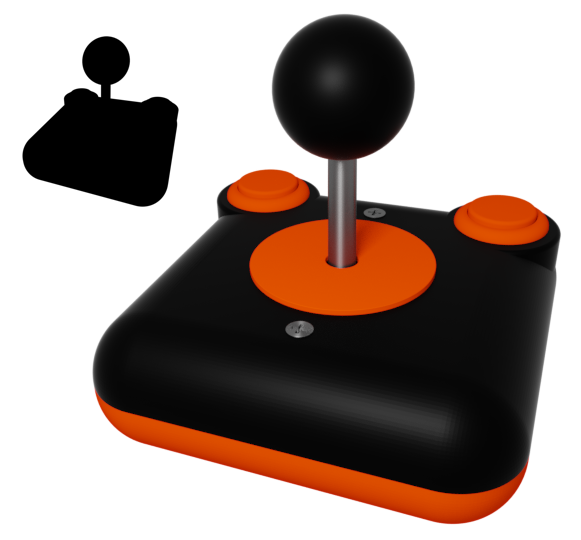
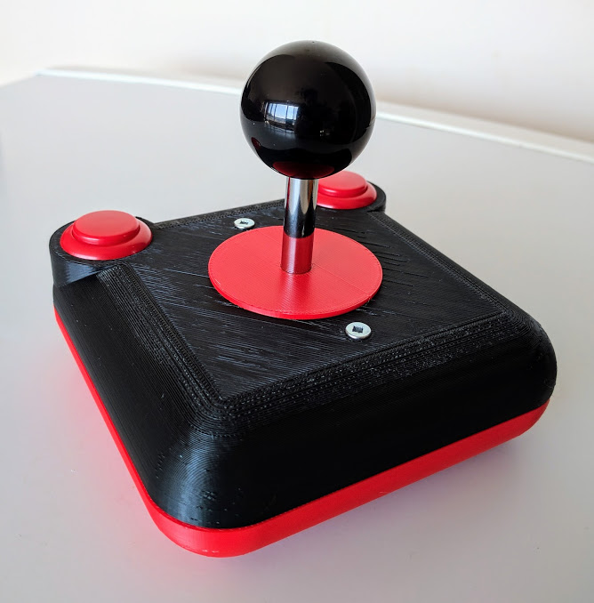

Active Projects
Ludum Dare
TODOJammer
TODO. Live stream aggregation, among other things.T3 Joystick
Originally designed in an attempt to replace the current Ludum Dare logo, the T3 joystick is a functional retro-style joystick made with Sanwa Arcade parts and a 3D printed shell. The latest incarnation of the design is roughly 10% smaller, and is shown in the render on the left.
 
2016
"High Tech Home Gardening" Mk1
Built a piece of hardware that monitors the mouisture level of the plants in my garden. Made using a low-power small Arduino clone, on a custom board.
Unfortunately the probes eventually corroded became unusable, but it was neat while it lasted.
2015
Commodore 64 game2013
Toom2012
That lizard game2010
Smiles for Kindle2009
Smiles HD2008
Smiles2007
PuffBOMB HD
A commercial remake of PuffBOMB. Originally in development for Xbox 360, due to a variety of reasons the project was cancelled, shelved, and never released.


2006
The Spider: Game Prototype
Early prototype of an original physics-based platform. Featured a custom soft-body physics engine.


2004
Zooble: Game Prototype
Originally created for 72 Hour GDC in 2004.
2003
PuffBOMB: Game Prototype
Originally created for Ludum Dare #3 in 2003. http://puffbomb.com
More info: http://ludumdare.com/compo/2007/11/26/puffbomb/